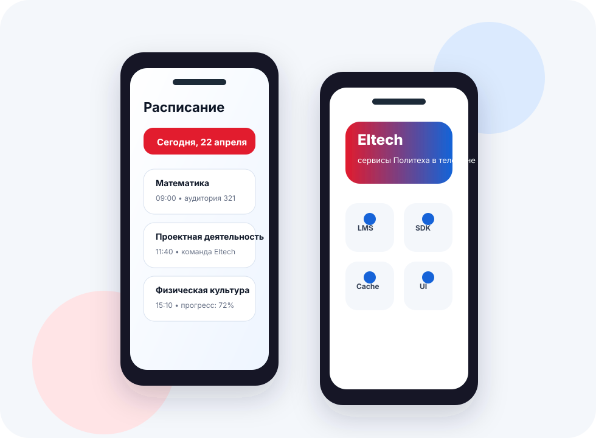

Старт разработки SDK
Начата работа над SDK_Eltech для взаимодействия с внутренними API университета. Подготовлено описание методов, запросов и ответов.
Проектная деятельность
Кроссплатформенное мобильное приложение для доступа к расписанию, LMS/Moodle и сервисам Московского Политеха со смартфона.

О проекте
Eltech решает проблему неудобного использования университетских веб-сервисов на смартфонах. Приложение объединяет повседневные сценарии студента: расписание, учебные материалы, авторизацию и элементы личного кабинета.
Цель проекта - создать полноценный мобильный клиент Московского Политеха с понятным интерфейсом и архитектурой, готовой к развитию.
Архитектура

Участники
| Участник | Задачи | Часы |
|---|---|---|
| Клепиков Станислав | Руководитель проекта | 50 |
| Воронин Даниил | SDK_Eltech, документация SDK | 45 |
| Смирнов Ярослав | SDK_Eltech | 42 |
| Алешин Станислав | Cache | 38 |
| Ермаков Дмитрий | Экран расписания | 38 |
| Сарафанов Алексей | Экран расписания | 37 |
| Фролов Алексий | Domain | 36 |
| Жигунов Дамир | Экран расписания | 36 |
| Фролков Даниил | Экран расписания | 35 |
| Агеев Олег | Domain | 35 |
| Максимов Дмитрий | Domain | 34 |
| Шерешев Роман | Domain | 34 |
| Гордеев Игорь | UI | 34 |
| Станкевич Михаил | Domain | 33 |
| Евдакимов Артем | Экран входа и авторизация | 33 |
| Тимофеев Михаил | Экран входа и авторизация | 32 |
| Горячев Владислав | Cache | 32 |
| Карпов Александр | Экран физической культуры | 31 |
| Овчаренко Александр | Cache | 30 |
| Карева Елена | UI | 29 |
| Акимова Ангелина | UI | 28 |
| Солодовников Захар | UI | 28 |
| Верховец Алина | UI | 27 |
| Андреев Иван | UI | 26 |
| Гутников Владимир | UI | 25 |
| Савинова Ярослава | Документация | 24 |
| Азнаурьян Игорь | Документация | 22 |
Журнал
Начата работа над SDK_Eltech для взаимодействия с внутренними API университета. Подготовлено описание методов, запросов и ответов.
Добавлен экран отслеживания прогресса по физкультуре: баллы, посещения и данные из личного кабинета.
Реализован базовый функционал взаимодействия с Moodle, парсинг учебных материалов и интеграция пользовательских сессий.
Описаны бизнес-сущности и сценарии использования, логика приложения отделена от инфраструктурных деталей.
Создана базовая верстка расписания, карточки занятий и переключение между датами.
Ресурсы